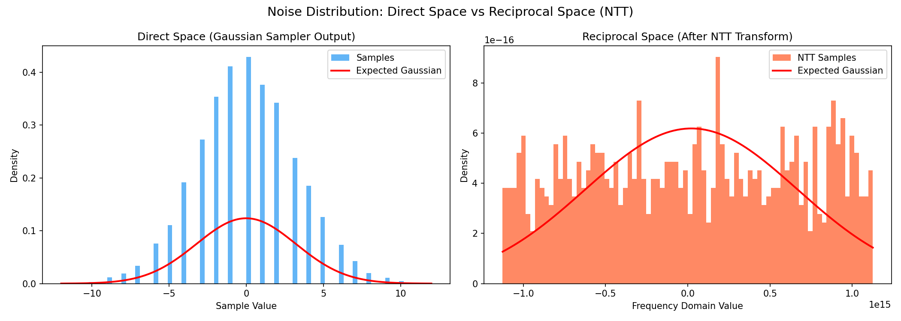
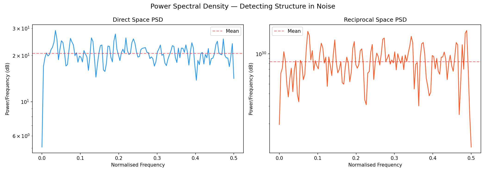
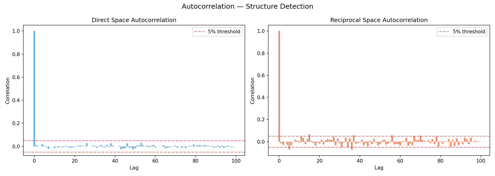

Dragonfire Research | 2026-03-21T10:38:16Z
Ring Degree: 1024 | Samples: 10000
Lattice-based cryptographic security depends on the hardness of finding short vectors in high-dimensional lattices. The noise added during encryption (from a Gaussian distribution) is what makes the lattice problem hard. However, when this noise is transformed into the Number Theoretic Transform (NTT) domain — the discrete analogue of reciprocal space in solid-state physics — structural anomalies may become visible that are hidden in direct space.
This analysis examines the LUX lattice implementation by:
1. Capturing raw Gaussian noise samples from the sampler (direct space)
2. Applying NTT transformation to move into reciprocal space
3. Comparing statistical properties across both domains
4. Computing power spectral density to detect hidden periodicity
5. Measuring autocorrelation to identify exploitable structure
6. Timing crypto operations to detect side-channel leakage
The physical analogy: just as phonon dispersion reveals defects in a crystal lattice that are invisible to direct inspection, spectral analysis of cryptographic noise can reveal implementation weaknesses that are invisible to standard statistical tests.



{
"name": "Direct Space Distribution",
"n": 10000,
"mean": -0.006,
"std": 3.2270983870963708,
"variance": 10.414163999999998,
"skewness": 0.07002761103342017,
"kurtosis": 0.07464858285995923,
"min": -12.0,
"max": 12.0,
"normality_test": "D'Agostino-Pearson",
"normality_stat": 10.438236109312696,
"normality_p": 0.005412100198788883,
"is_gaussian": "False"
}
{
"name": "Direct Space Spectral",
"psd_mean": 20.605750770855902,
"psd_max": 29.02559861240613,
"psd_peak_freq": 0.03515625,
"spectral_flatness": 0.9862111852975296,
"is_white_noise": "True",
"max_autocorrelation_lag1_10": 0.02125353750910795,
"has_structure": false
}
{
"name": "Reciprocal Space Distribution",
"n": 1024,
"mean": 21990232554241.01,
"std": 645308229335358.8,
"variance": 4.16422710847936e+29,
"skewness": -0.024240938988069657,
"kurtosis": -1.1925365596921327,
"min": -1125631967668576.0,
"max": 1124983497145603.0,
"normality_test": "Shapiro-Wilk",
"normality_stat": 0.9550780996000607,
"normality_p": 3.631961308521301e-17,
"is_gaussian": "False"
}
{
"name": "Reciprocal Space Spectral",
"psd_mean": 8.357475151673109e+29,
"psd_max": 1.709649625264889e+30,
"psd_peak_freq": 0.48828125,
"spectral_flatness": 0.9213490085045406,
"is_white_noise": "True",
"max_autocorrelation_lag1_10": 0.07065912131571873,
"has_structure": true
}
{
"name": "Cross-Domain Comparison",
"direct_variance": 10.414163999999998,
"reciprocal_variance": 4.16422710847936e+29,
"variance_ratio": 2.5008636005452908e-29,
"verdict": "WARNING: Significant energy redistribution between domains"
}